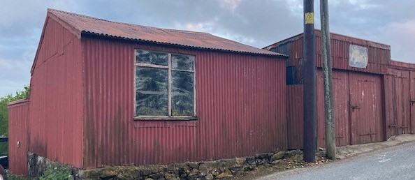

Glandwr Autowerkstatt
In den 1960er und 1970er Jahren machte die Sonntagsschule häufig Ausflüge, meistens nach Rhyl oder Llandudno. Die Werkstatt vom Schuster Moi befand sich in der Nähe der Glandwr-Autowerkstatt. Adam Hughes erinnert sich, wie er mit John Albert Baum im Dorf herumgelaufen ist, um alte Schuhe zu sammeln und sie zu Moi zu bringen, damit er sie reparieren konnte und normalerwise machte er das dann auch!

Glandwr Garage in 2021